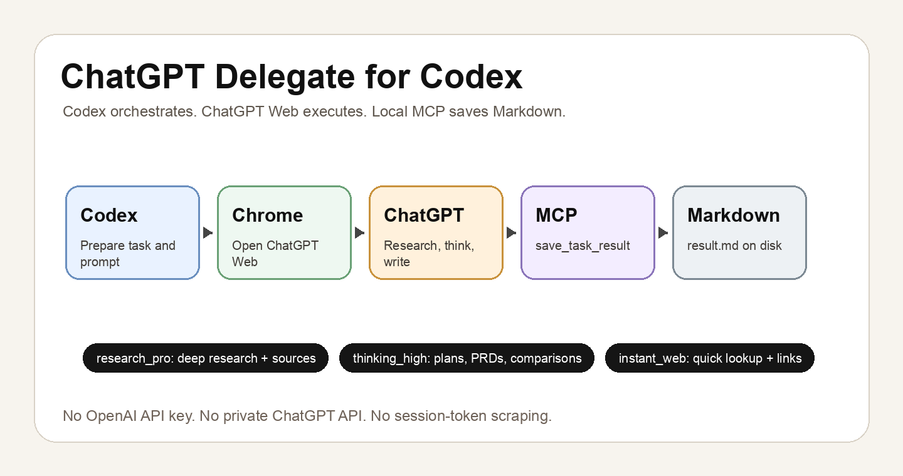

Local agent workflow
ChatGPT Delegate for Codex
Ask Codex to hand off deep research, PRD writing, comparison, and quick web lookup tasks to ChatGPT Web. Codex handles orchestration; ChatGPT does the long-form work; a local MCP connector saves the result as Markdown.

Save Codex tokens
Codex prepares the task and waits for status. It does not generate or read the full body unless you explicitly ask.
Use ChatGPT Web
The actual research, thinking, writing, and browsing happen in the signed-in ChatGPT Web/App surface.
Keep local files
Results land under artifacts/chatgpt-delegation/<task_id>/result.md with metadata.
Task Profiles
research_pro
For deep research, community methods, best practices, and long reports with sources.
thinking_high
For design work, PRDs, planning, comparisons, structured writing, and strategy drafts.
instant_web
For quick lookup, latest facts, confirmation checks, and short source-backed answers.
Data Flow
- In Codex, say something like
让 ChatGPT 调研一下 xxx,让 ChatGPT 写一个 PRD, or让 ChatGPT 查一下最新情况. - Codex runs
chatgpt-delegate prepare, which createstask.json,prompt.md, and a target result path. - Codex starts the local MCP server and a temporary HTTPS tunnel if ChatGPT needs to reach the connector.
- Codex opens ChatGPT Web through browser automation and sends the generated prompt to the ChatGPT Delegate connector app.
- ChatGPT performs the research, thinking, writing, or web lookup in ChatGPT Web.
- ChatGPT calls
save_task_resulton the MCP connector, writingresult.mdandresult.json. - Codex polls task status and returns only the profile, status, byte count, and local file path by default.
Use From Codex
Install a Codex skill named chatgpt-delegate and expose a local MCP server with the tool contract below. Then use natural language in Codex:
让 ChatGPT 调研一下 100M 上下文大模型的社区方法
让 ChatGPT 设计一个 ChatGPT x Codex 的 PRD
让 ChatGPT 查一下 xurl OAuth2 当前最佳实践The important rule is the execution split: Codex orchestrates the browser and file checks; ChatGPT produces the substantive Markdown body.
MCP Tool Contract
save_task_result(task_id, title, markdown, summary=None, overwrite=True)
list_results(limit=20)
read_result(task_id)
connector_status()The status tool should make the boundary explicit: codex_execution=false, openai_api=false, and private_chatgpt_api=false.